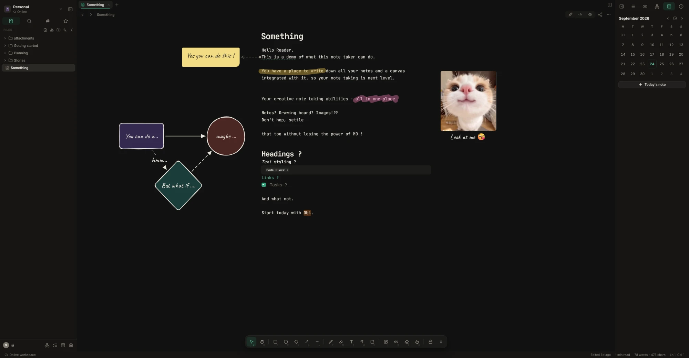
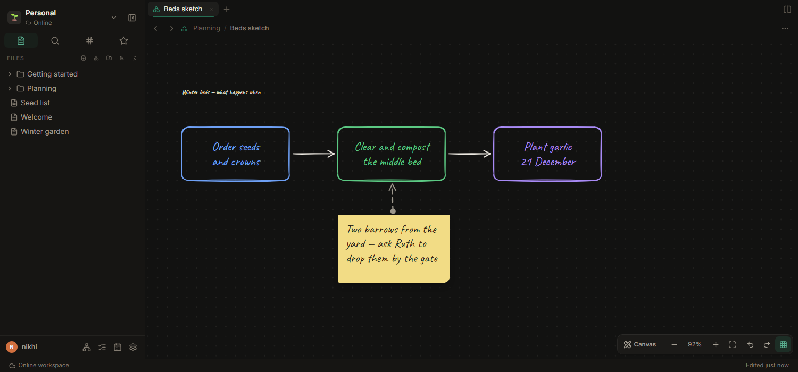
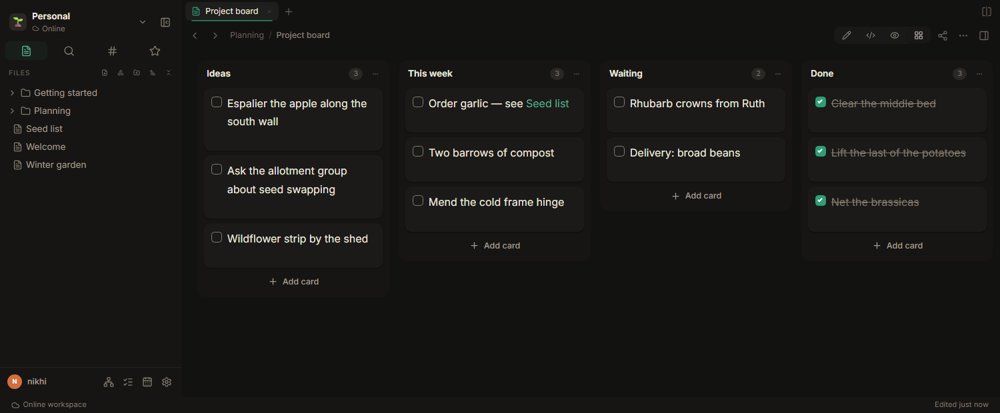
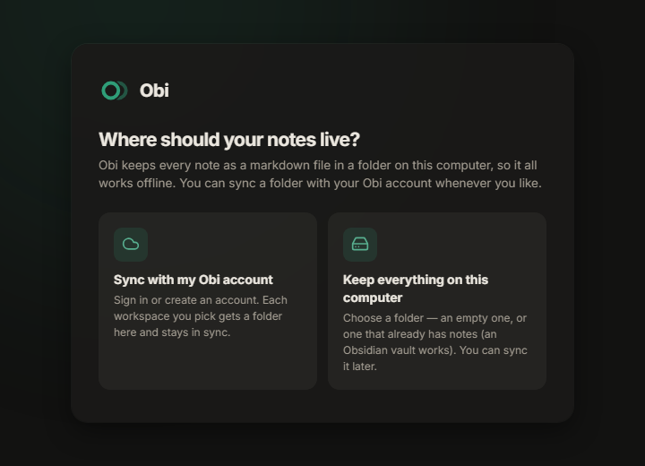

Obi
ObiYour notes are files, not a database.
Write in plain markdown, then draw all over it — sticky notes, arrows, shapes, images and highlights that stay pinned to the words they belong to, without changing a character of the text.
Runs on this server · Works offline in the desktop app · Every note stays a .md file

The canvas
Think beside your words, not in another app
Everything you draw is anchored to a line of text. Add a paragraph above and the sticky note moves down with it; reword a sentence and the arrow keeps pointing at it. The markdown file never changes.
Pen, shapes, arrows, highlights
Sketch a diagram in the margin, circle a paragraph, or run an arrow from a phrase to a note you left yourself.
Sticky notes and canvas text use a hand-drawn font when you want one, and markdown blocks with live preview when you don't.
Whole whiteboards, when a margin isn't enough
Boards are files too: open one on its own, or embed it in a note and keep writing around it.

Writing
Markdown that renders as you type
No preview pane to keep in sync, no proprietary blocks to export out of later.
Plain files, your folders
One note, one .md file. Open the same folder in any other editor; nothing is locked in.
Tables, code, maths, diagrams
They take shape while you write, with the markdown still there underneath the moment you need it.
Links, tags, tasks, a graph
Wiki links with backlinks, daily notes, every task in one place, and search that keeps up as you type.
A markdown file, seen as a board
Headings become lists and task lines become cards. Drag one and the file changes — nothing else does.

Sharing
Alone, or with other people
The same notes, shared as far as you want them to go — and no further.
Live, together
Share one note or a whole workspace. Edits and cursors arrive as they happen, and the file on disk stays plain markdown.
Publish a link
A read-only page that looks exactly like your note — drawings, tables and all — and updates when you edit.
History and trash
Earlier versions are kept as you write, and deleted notes wait in the trash instead of disappearing.
Desktop
Works with no connection at all
Every workspace is a folder you choose — new, or one that already holds your notes. An Obsidian vault works as it is.
- Write offline; it catches up when you're back
- Changes on both sides merge, and colliding edits keep both copies
- Optional GitHub sync: commit and push on save, on a timer, or by hand
- Edit the same folder in another app — Obi notices
Not code-signed yet: if Windows says it “protected your PC”, choose More info → Run anyway. Release notes

Self-hosting
One container, one folder of data
Your notes sit on your own disk as markdown. The database only keeps who you are and what you shared — delete it and the notes are still there.
- Docker, a volume, and an hour on a small box
- Accounts confirmed by email, or invite-only if you'd rather
- Keep a workspace in your own GitHub repository
services:
obi:
image: obi
environment:
APP_SECRET: <a long random string>
PUBLIC_URL: https://notes.example.com
volumes:
- obi-data:/data
ports:
- "3000:3000"Start with one note
You can take them all out again whenever you like. They were only ever files.